100%
Scroll to zoom • Drag to pan • ESC to close
Comprehensive analysis of digital infrastructure and R&D trends across Germany, Ireland, and Switzerland (2010-2025)
This graph shows the evolution of broadband prices (100-200 Mbps) in Germany and Ireland from 2010 onwards. The vertical dotted lines indicate major regulatory milestones (GDPR, DSA, DMA, AI Act). This visualization helps identify whether regulatory changes correlate with pricing trends in broadband services.

Tracks the percentage of population using the internet across Germany, Ireland, and Switzerland. This metric is fundamental for understanding digital transformation and serves as a baseline indicator of how these countries have progressed in internet adoption relative to regulatory implementations.

Shows the percentage of households with access to broadband speeds greater than 1 Gbps in each country. This metric reflects infrastructure investment and technological advancement, which may be influenced by regulatory requirements for data processing and storage capabilities.

Displays the percentage of individuals using cloud services across the three countries. Cloud adoption is particularly relevant to GDPR and subsequent regulations, as these services must comply with strict data protection and privacy requirements.

GERD (Gross Domestic Expenditure on R&D) growth rates show the overall investment trends in research and development. This comprehensive metric includes all sectors and helps assess whether regulatory changes have influenced national innovation priorities and spending patterns.

BRED tracks R&D investment specifically from the business sector. This is crucial for understanding how private enterprises have responded to regulatory requirements, potentially increasing investment in compliance technologies, data protection systems, and privacy-enhancing technologies.

GOVERD represents government expenditure on R&D. This graph reveals whether governments have increased funding for research in response to regulatory needs, including cybersecurity, AI governance, and digital infrastructure development.

HRED shows R&D investment from higher education institutions. Universities play a key role in developing new technologies and training the workforce needed for digital transformation and regulatory compliance.

Compares all four R&D metrics (GERD, BRED, GOVERD, HRED) for Germany. This unified view helps identify which sectors are driving R&D growth and how they respond differently to regulatory milestones.

Compares all four R&D metrics for Ireland. Ireland's tech sector concentration makes this particularly interesting for understanding how multinational corporations respond to EU regulations.

Compares all four R&D metrics for Switzerland. As a non-EU member with bilateral agreements, Switzerland's patterns may differ from Germany and Ireland, providing an interesting comparative baseline.

Shows how cloud adoption varies by company size in Germany. Different size categories (10-249, 50-249, 10+, 250+ employees) may face different compliance challenges and have different resources to address regulatory requirements.

Enterprise cloud adoption segmented by company size in Ireland. The presence of major tech companies in Ireland makes this analysis particularly relevant for understanding enterprise-scale digital transformation.

Enterprise cloud adoption by company size in Switzerland, showing how Swiss businesses of different scales are adopting cloud technologies in the context of data protection regulations.

Tracks the total broadband traffic volume (in Exabytes) across the three countries. Increasing data traffic may reflect greater digital activity and could be influenced by how regulations affect data processing, storage, and transfer practices.

Detailed view of broadband pricing trends for Germany and Ireland individually, allowing for closer examination of price changes around specific regulatory implementation dates.


Direct comparison of internet usage growth across all three countries on a single graph, making it easier to identify convergence or divergence patterns in digital adoption rates.

Combines both individual and enterprise cloud adoption data for all three countries, showing the relationship between personal and business cloud usage patterns.

A cumulative index showing how total R&D investment (GERD) has accelerated over time for each country individually (2010 = 100). This normalized view helps identify whether the pace of overall R&D investment has changed following regulatory implementations and allows for direct comparison of growth trajectories across Germany, Ireland, and Switzerland.

A cumulative index showing how business sector R&D investment (BRED) has accelerated over time for each country individually (2010 = 100). This reveals how private enterprise investment in research and development has evolved in response to regulatory requirements and market conditions, with particular relevance to compliance technologies and data protection systems.

A cumulative index showing how government R&D spending (GOVERD) has accelerated over time for each country individually (2010 = 100). This tracks public sector commitment to research funding and may reflect government responses to regulatory needs in areas such as cybersecurity, AI governance, and digital infrastructure.

A cumulative index showing how higher education R&D investment (HRED) has accelerated over time for each country individually (2010 = 100). Universities play a crucial role in fundamental research and workforce training for the digital economy, making this metric important for understanding long-term innovation capacity.

Bar charts showing GERD growth rates in the years immediately before and after each major regulation (GDPR, DSA, DMA, AI Act). This focused analysis helps identify immediate impacts of regulatory changes.


Composite measure based on internet penetration rates, serving as a proxy for overall digital infrastructure maturity. Higher maturity may correlate with better ability to implement and comply with digital regulations.

Compares average broadband traffic growth rates in periods before and after each major regulation. This helps assess whether regulations have influenced data usage patterns and digital activity levels.

Shows the cumulative effect of R&D investment changes over time for each country, starting from a baseline of 100 in 2010. This reveals which countries have achieved the greatest sustained growth in R&D investment.

Side-by-side comparison of key metrics (Internet Usage Growth Rate, Cloud Adoption Growth Rate, GERD Growth Rate) averaging periods before and after GDPR (2018). This provides a clear snapshot of how growth patterns changed.


Focuses on enterprise cloud adoption across different company sizes (10-249 and 250+ employees) with clear marking of regulatory periods. This helps understand how businesses of different scales responded to compliance requirements.

Geographic visualization comparing average internet usage growth rates before and after GDPR. The side-by-side maps with country shading make it easy to see spatial patterns in how GDPR affected internet adoption across the three countries.

Geographic visualization of how individual cloud service adoption growth rates changed before and after GDPR. The darker shading indicates higher growth rates, revealing which countries saw the most significant changes.

Geographic visualization of GERD growth rate changes before and after GDPR. This map format makes it particularly easy to compare Ireland's dramatic increase in R&D investment against the more modest changes in Germany and Switzerland.

Survey responses showing how businesses perceive the impact of various EU regulations including GDPR, AI Act, Digital Markets Act, Digital Services Act, and others. Respondents categorized each regulation's impact as negative, having no significant impact, or positive. This provides direct insight into how the business community views regulatory burden versus benefits, with data privacy laws (GDPR) showing the highest percentage of negative responses at 60%, while Payment Services Directive 2 shows the most balanced perception.
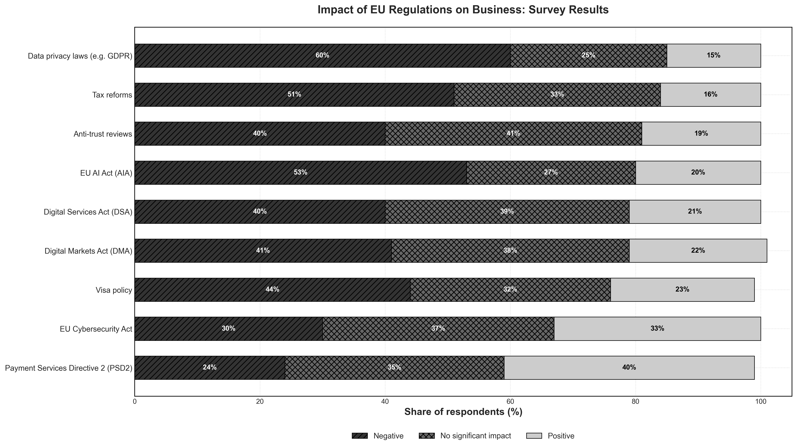Survey results from March 2023 showing adult Europeans' opinions on how well various digital rights and principles are being applied in practice. Categories assessed include freedom of assembly and association online, freedom of expression, digital education, access to safe and privacy-friendly technologies, online public services, affordable high-speed internet, trustworthy digital environments, environmental impact information, fair working conditions, online privacy, data control, freedom of choice with AI, and environmentally sustainable digital products. Responses range from "Very well" to "Not well at all," with a "Don't know" option. The results reveal that while majorities see most rights as being applied fairly or very well, significant minorities express concerns, particularly regarding data control (11% say "not well at all") and digital product sustainability.
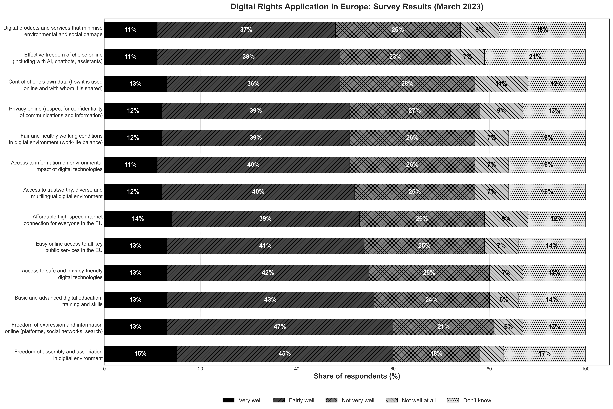This bar chart displays the potential cost increases implied by the Digital Markets Act (DMA) and Digital Services Act (DSA) for EU businesses that use U.S. digital service providers, assuming a 5% technology cost increase. Costs are broken down by firm size, from micro businesses with 0-9 employees (€12,495 million) up to large enterprises with 250+ employees (€33,410 million). The total potential cost increase across all firm sizes amounts to €70,999 million. Larger firms face disproportionately higher costs, reflecting their greater reliance on digital service infrastructure and the scale of their operations.
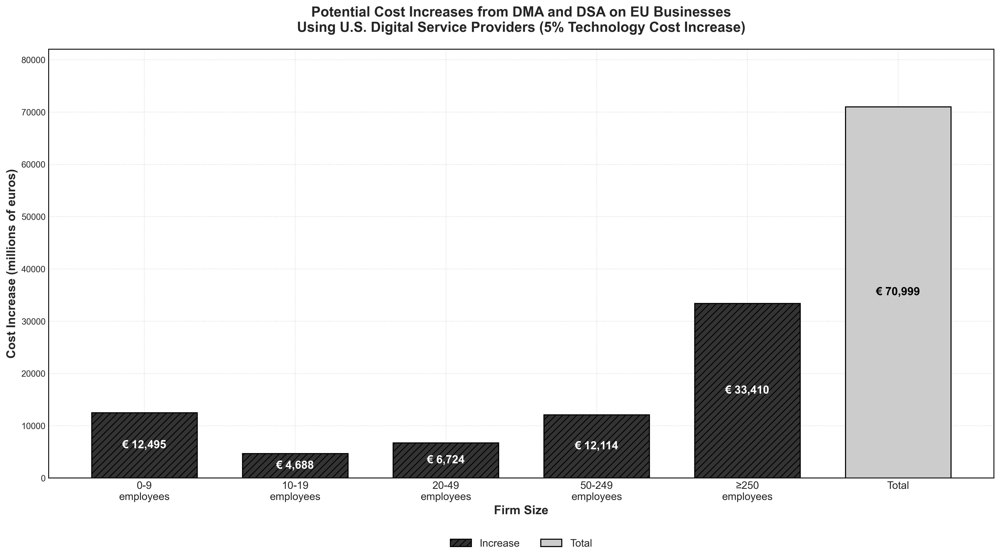Survey results showing the most likely actions EU companies would take when facing a 5-10% increase in costs from U.S. digital service providers due to DMA and DSA regulations. The top three responses indicate significant negative impacts: 29% would have to change to other poorer quality technology, 28% expect to be less competitive in export markets, and 27% would pass costs to customers through price increases. Other common responses include selling more products/services (24%), reducing technology usage (23%), and switching to Chinese technology (18%). Approximately 17% would not be able to raise salaries or would hire fewer people, while 10% see no impact. This data reveals the widespread concern about regulatory compliance costs affecting business operations and competitiveness.
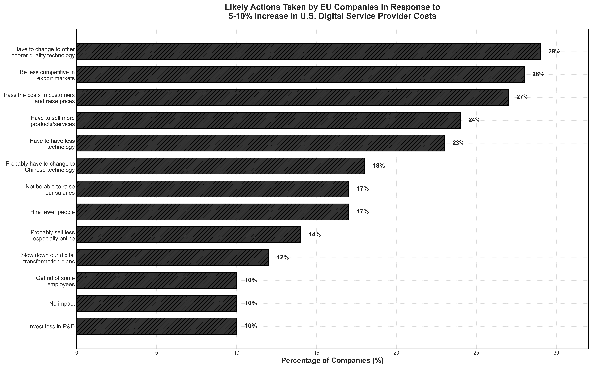Stacked horizontal bar chart showing how European firms rate a 5% increase in technology costs compared to other business challenges they face. Respondents categorized the tech cost increase as "much worse," "worse," "less bad," or "pretty irrelevant" relative to seven different challenges. The results show that for most challenges—including slowing demand, employee costs, inflation, supply chain issues, and managing new regulations—approximately 45-50% of firms rate a 5% tech cost increase as worse or much worse than these existing problems. Notably, even when business is good (no issues), 47% still consider the tech cost increase significant. This indicates that technology cost increases represent a substantial burden that ranks alongside or above traditional business challenges in terms of impact on European firms.
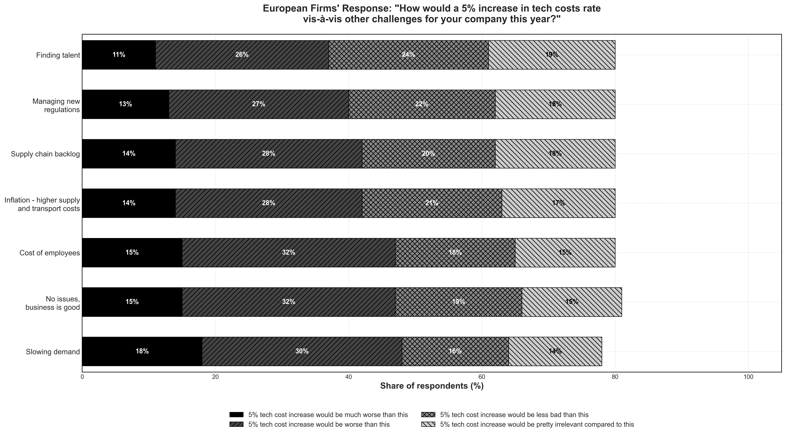Survey results showing how firms of different sizes perceive the importance of cost-savings benefits from integrated digital services. The data is broken down by five firm size categories from micro (less than 10 employees) to large (250+ employees). Across all firm sizes, strong majorities view integrated digital services as extremely important or important, ranging from 61% (large firms) to 76% (very small firms). Medium-sized firms (50-249 employees) show the highest appreciation with 76% rating it extremely important or important. Only a small minority across all sizes (2-5%) find integrated services inconvenient, preferring not to be tied to a single IT provider. This demonstrates broad consensus across European businesses that integrated digital services provide meaningful cost savings, though regulatory measures that fragment services or increase switching costs could undermine these benefits.
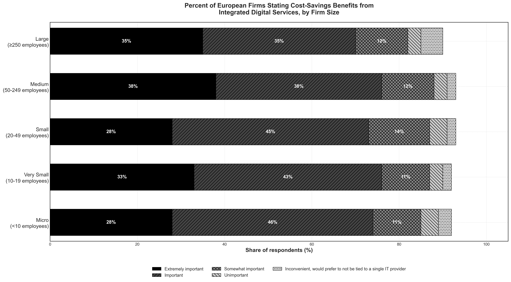Comprehensive overview of technology adoption rates among European enterprises with at least 10 employees and self-employed individuals. The data reveals near-universal internet access (99%) and fixed broadband usage (96%), with 85% maintaining websites. More advanced technologies show lower but significant adoption: 45% use cloud computing, 42% employ ERP software, and 37% utilize CRM systems. Emerging technologies like IoT (31%), RFID (12%), and AI (8%) show growing but still limited uptake. This baseline technology profile is critical for understanding the potential impact of regulations on digital service adoption, as restrictions or cost increases could slow the progression toward more advanced digital tools, particularly among smaller firms or those in traditional sectors.
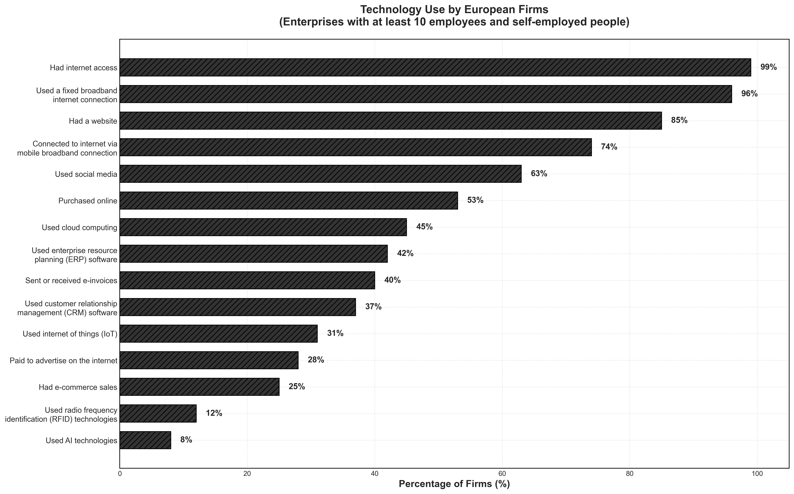Stacked bar chart showing which digital services European firms prioritize for investment over the next five years, segmented by company size. Software as a Service (SaaS) emerges as a top priority, particularly for very small (30%) and large firms (30%). AI and machine learning rank second, with interest ranging from 20-30% across all firm sizes. Cloud computing in general remains important (20-30%), with medium firms showing the highest priority at 30%. Internet of Things technology is prioritized more by smaller firms (20% for micro) than larger ones (13% for large). Blockchain, edge computing, and other technologies receive lower priority across all sizes. This data suggests that regulatory impacts on SaaS, AI, and cloud services would affect firms' strategic digital transformation plans most significantly.
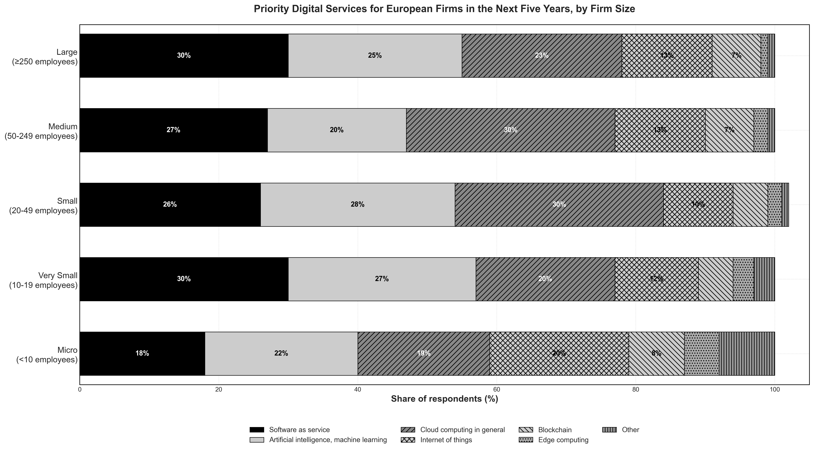Detailed breakdown of U.S. digital service usage across 24 platforms, segmented by five firm size categories. Instagram (52-55%), Facebook (45-50%), and YouTube (35-40%) lead in adoption across all firm sizes. Microsoft services show strong penetration: Windows (30-42%), Teams (22-45%), LinkedIn (18-32%), and Microsoft 365 (15-40%). Cloud platforms like Google Cloud, Zoom, and Microsoft Cloud see 16-48% adoption rates. Larger firms typically show higher usage rates, particularly for enterprise tools like Microsoft 365 (40% for large firms vs 15% for micro) and SAP (25% for large vs 2% for small). This extensive reliance on U.S. digital services across firm sizes demonstrates the potential widespread impact of regulatory measures that increase costs or restrict access to these platforms.
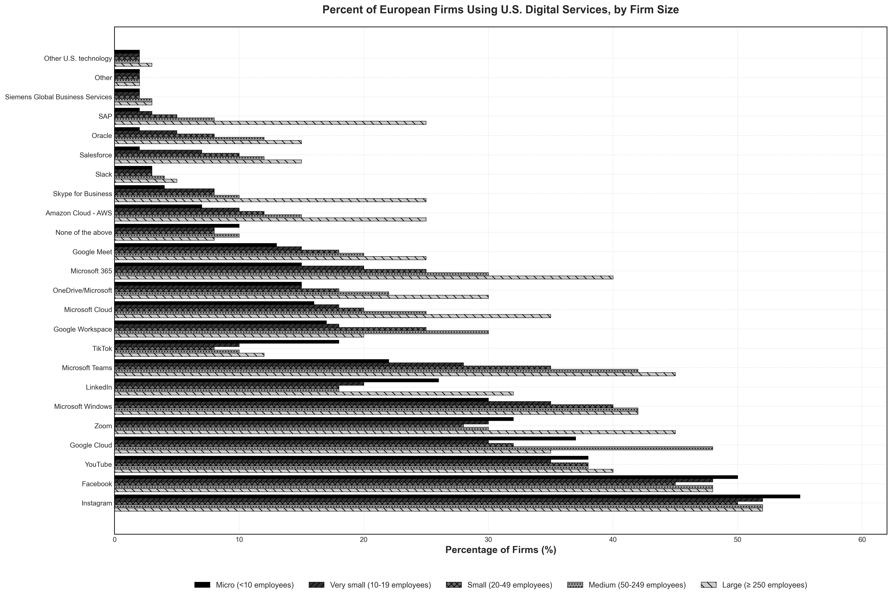Analysis of how firms of different ages perceive the benefits from U.S. digital services, focusing on ratings of "extremely great" advantage. Eight key benefit categories are examined: security/cybersecurity, performance, price, ability to manage data privacy, integration with work and solutions, efficiencies to reduce carbon footprint, ability to innovate faster, and ease of use. Across all firm age groups (from less than 1 year to over 10 years old), ratings remain remarkably consistent at 22-38%, with no age group showing dramatically different perceptions. Security/cybersecurity and performance consistently receive the highest "extremely great" ratings (34-36%), while ease of use and the ability to innovate faster also score well (30-38%). This consistency across firm ages suggests that the value proposition of U.S. digital services is universally recognized, regardless of business maturity.
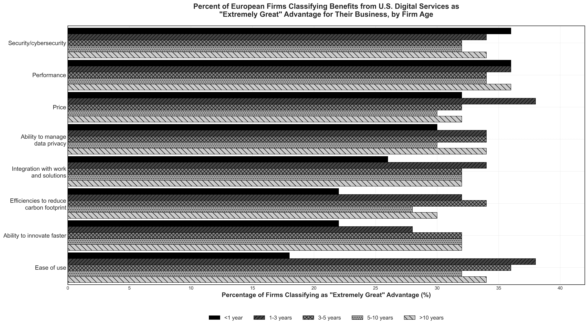Horizontal bar chart showing the potential cost increases implied by EU regulations on U.S. businesses that use U.S. digital service providers, broken down by 14 economic sectors. The total estimated cost impact reaches $96,561 million across all sectors. The finance, insurance, real estate, rental, and leasing sector faces the highest burden at $27,742 million, followed by information services ($17,337 million) and professional and business services ($16,024 million). Traditional sectors like agriculture ($275 million), mining ($284 million), and utilities ($331 million) face relatively lower costs. Manufacturing ($6,187 million), retail trade ($7,381 million), and wholesale trade ($6,477 million) represent significant middle-tier impacts. This sectoral analysis reveals how digital economy regulations disproportionately affect service-oriented and information-intensive industries that rely heavily on digital infrastructure and cloud services.
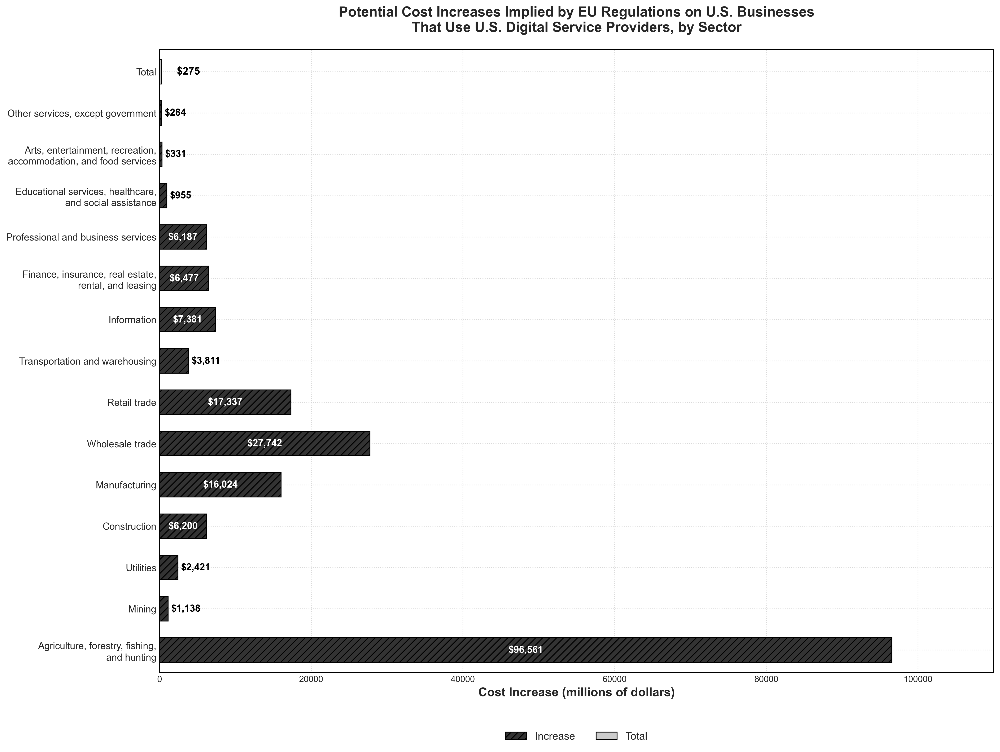Line chart tracking the percentage of notifications assessed within 24 hours across seven monitoring periods from December 2016 to November 2022, covering major social media platforms (Facebook, YouTube, Twitter, Instagram) and the average across companies. The data reveals a dramatic improvement following GDPR implementation in May 2018. Pre-GDPR performance was inconsistent: Facebook ranged from 50-60%, YouTube varied from 50-90%, Twitter started at only 25%, and the average was around 42-70%. Post-GDPR, all platforms showed significant improvement, with most reaching 80-95% response rates by the 4th monitoring (February 2019). The 5th monitoring (June 2020) marked the peak performance with an average of 92%. However, later periods show some decline, particularly for Twitter (dropping to 65%) and Instagram (falling to 52% by November 2022), suggesting ongoing challenges in maintaining rapid response times as content volume scales. This trend demonstrates GDPR's initial effectiveness in accelerating platform responsiveness to illegal content, while also highlighting the difficulty of sustaining these high standards over time.
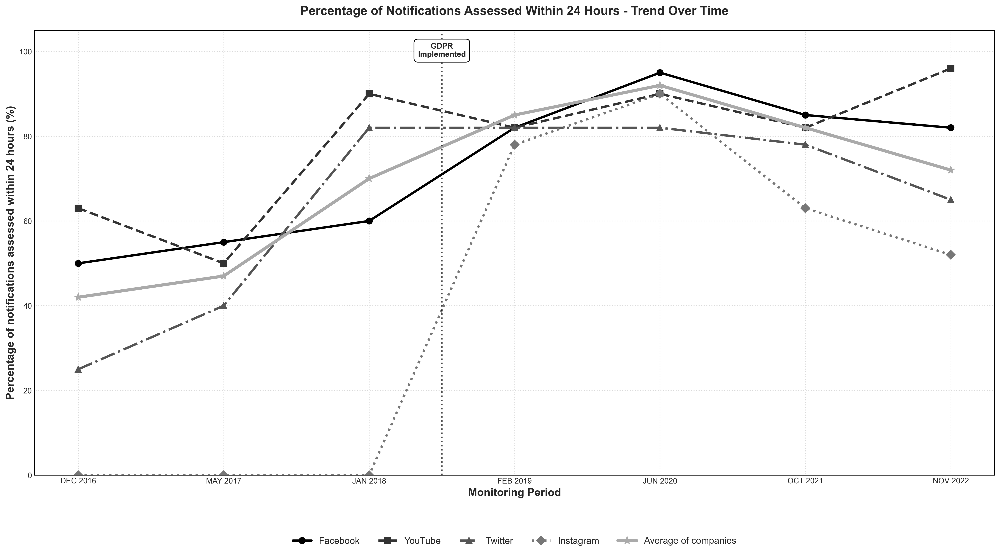Line chart showing compliance rates for the three major social media platforms—Facebook, YouTube, and Twitter—across seven monitoring periods from December 2016 to November 2022. This focused view highlights the distinct compliance trajectories of these leading platforms around the GDPR implementation in May 2018. Before GDPR, compliance rates varied dramatically: Twitter started at just 19.1%, Facebook at 28.3%, and YouTube at 48.5% in December 2016. Post-GDPR, all three platforms showed marked improvement, with YouTube and Facebook reaching peaks of 85-90% by 2019-2020, while Twitter lagged with more moderate gains. The most recent monitoring in November 2022 shows diverging trends: YouTube achieved its highest compliance rate at 90.4%, Facebook settled around 69.1%, while Twitter declined to 45.4%. This comparison reveals that while GDPR initially drove compliance improvements across all major platforms, sustaining high compliance rates has proven more challenging for some platforms than others, with YouTube demonstrating the most consistent long-term compliance performance.
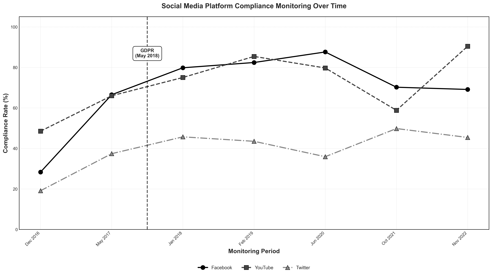